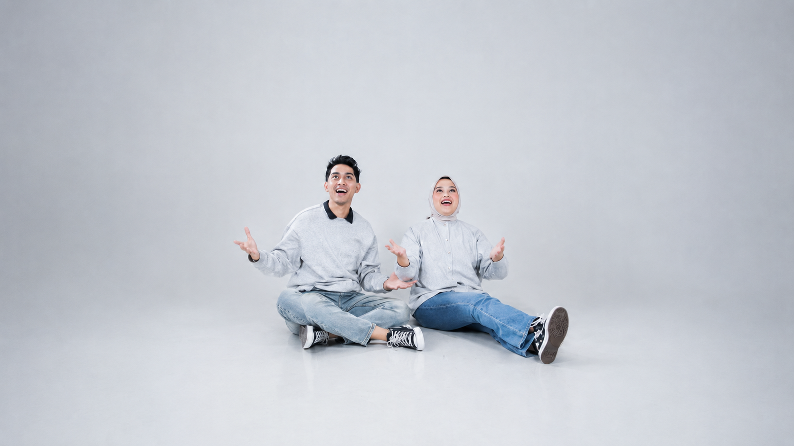
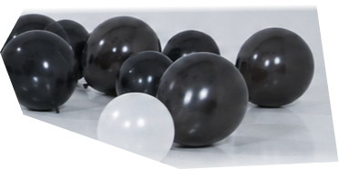
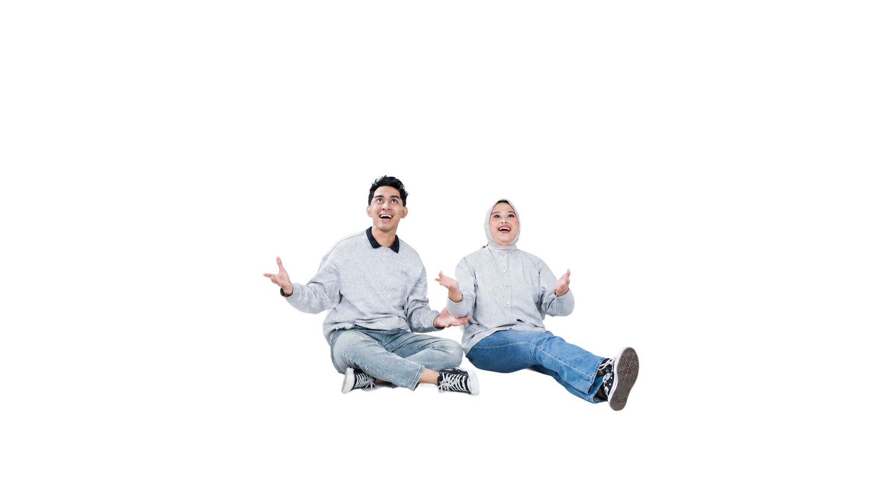
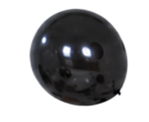
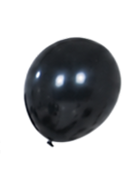
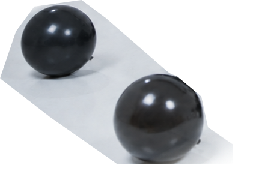
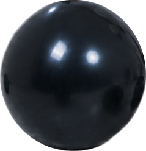

Eleven · Eight · Twenty-Six
Salsa&Arkan
Are getting married
Scroll
Our story
A small celebration of a very long yes.
We met on a humid Tuesday in 2022, ducked under the same awning, and ended up sharing a single black umbrella from a stranger. Four years later, we'd like you in the room when we say it out loud.
The day will be intimate and unhurried — long lunch, quiet vows, music after sundown.